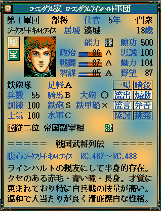
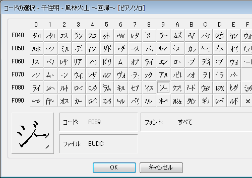
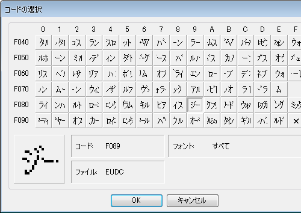
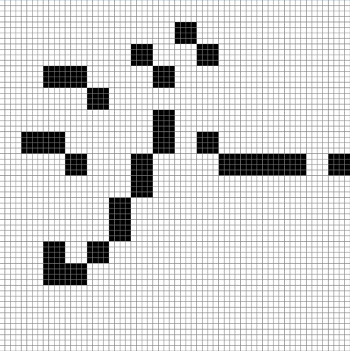
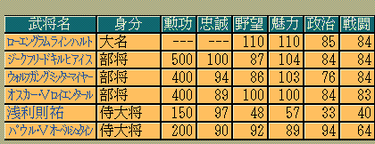

天翔記において、外字を利用して独自の文字を利用する方法を説明しています。
又、普通に外字を作成するだけでは天翔記上で汚く表示されてしまいますので、
綺麗に表示するための独特なノウハウも掲載しています。
下のような特殊な武将：「ジークフリード キルヒアイス」という名称の武将を天翔記で実現するには、どのようにすればよいのでしょうか？

天翔記では、苗字に３文字、名前に３文字が使用出来ますが、｢ジークフリード」というのは、
半角にしたとしても３文字には収まりません。
そこで、Windowsに標準搭載されている、外字エディターで、特殊な文字を作ることで実現します。
(市販のものを利用してももちろんＯＫ)
(※外字エディターの使い方などは、WEBで検索して下さい。)

なお、天翔記で認識する外字の範囲は、上記画像一覧の一番右下の×までです。
それ以降の文字コードの外字は、天翔記では認識できません。
制作した外字は全てのインストール済みの全てのフォントにリンクすることも出来ますし、
特定のフォントにのみリンクすることも出来ます。
他に外字を利用していないのであれば、全てのフォントにリンクしてしまって良いでしょう。
そうでない場合、天翔記、及び、天翔記の各種エディター等で利用されているフォントを選んでリンクすることとなります。
具体的には、｢ＭＳ ゴシック｣「ＭＳ 明朝｣「MS Sans Serif｣、｢天翔 明朝｣(使ってる場合)あたりにリンクしておけば良いこととなります。
外字フォントへのリンクは、外字の標準機能でも可能ですが、http://opentype.jp/eudclinker.htm あたりのツールを使うと、一層簡単でしょう。
天翔記ゲーム内では、外字直接を入力することは出来ません。
ScenarioMod、シナリオエディタ、セーブエディタなどを利用して、
該当の名称を変更して下さい。
この画像を見て、｢外字部分の文字が汚い。他とテイストが違う｣と思った人もいるかと思います。
天翔記で美しく見える外字を作るためには秘訣があります。
それは「最終的に16ドットx16ドット」に縮小されることを意識して、
外字のドットを描いておけば良いということです。

外字エディタは文字が64ドット×64ドットですが、天翔記では、最終的に16ドット×16ドットに(斜め補完なしに)縮小されます、
なので、「4ドットx4ドットを1ピクセルに見立てて外字をブロックビットマップ調に作れば良い」と言う事になります。

